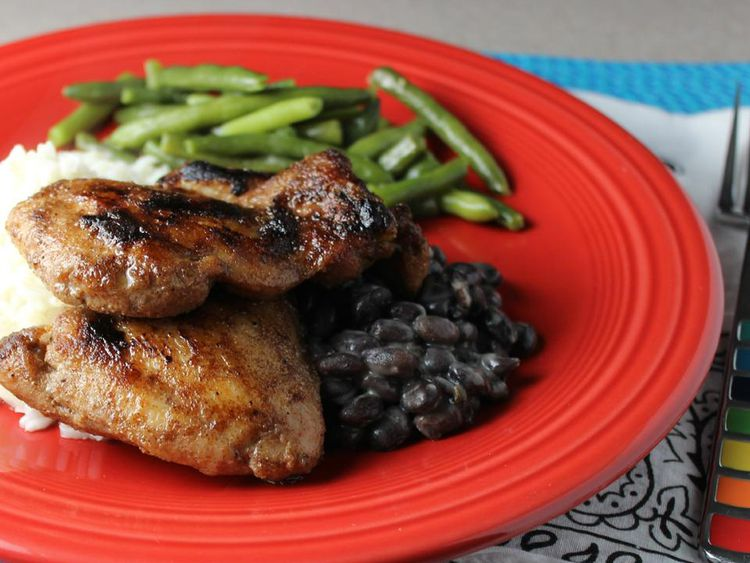

Perfect Baked Jerk Chicken Recipe

Description
This baked jerk chicken is not too sweet, not too spicy. I was on the hunt for a perfect jerk seasoning and ended
up making my own blend. Hope you like it!
This dish can take up to 3 hours and 40 minutes to prepare!
Ingredients
- 1 teaspoon salt, or to taste
- 1 teaspoon ground allspice
- 1 teaspoon packed brown sugar
- 1 teaspoon onion powder
- 0.5 teaspoon dried minced garlic
- 0.5 teaspoon ground nutmeg
- 0.5 teaspoon black pepper
- 0.5 teaspoon ground ginger
- 0.25 teaspoon cayenne pepper
- 0.25 teaspoon ground cinnamon
- 0.25 teaspoon dried thyme leaves
- 2-3 lbs whold chicken, cut into pieces
- 0.25 cup vegetable oil
Directions
- Mix salt, allspice, brown sugar, onion powder, garlic, nutmeg, black pepper, ginger, cayenne pepper,
cinnamon, and thyme in a large bowl; add chicken pieces and toss to coat with seasoning mix. Cover and
marinate in the refrigerator, 2 to 4 hours.
- Preheat the oven to 350 degrees F (175 degrees C). Pour vegetable oil into a 9x13-inch baking dish.
- Place chicken pieces skin-side up into the baking dish. Bake in the preheated oven until juices run clear
and chicken is no longer pink near the bone, 1 hour 20 minutes. An instant-read thermometer inserted near
the bone should read 165 degrees F (74 degrees C).
- Turn the oven on to broil, and cook until the skin crisps, 2 to 5 minutes.